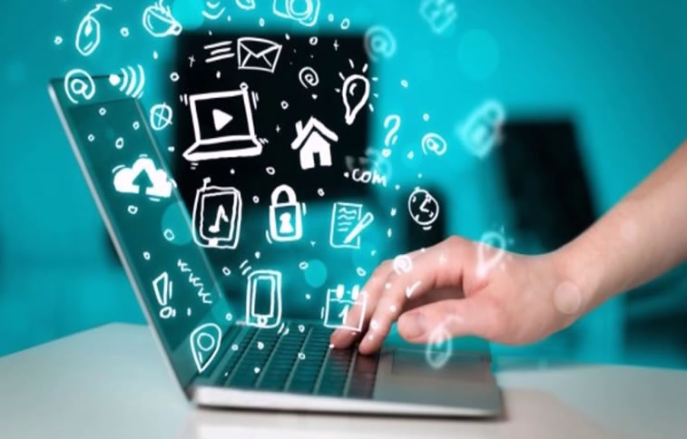

O profissional que trabalha com manutenção de computadores. Mercado de trabalho está aquecido na área e apresenta perspectivas promissoras; carreira exige constante atualização em relação a tecnologias

O que faz um Técnico em informática? Um técnico em informática desempenha um papel fundamental no suporte e manutenção de sistemas de computadores e redes. Seu trabalho envolve uma variedade de tarefas relacionadas à resolução de problemas técnicos, instalação de software, configuração de hardware, suporte ao usuário e segurança da informação. Um técnico em informática é responsável por diagnosticar e resolver problemas de hardware e software. Isso pode incluir a substituição de componentes defeituosos, a atualização de drivers, a instalação e configuração de programas, bem como a remoção de vírus e malware. Eles também podem realizar tarefas de manutenção preventiva, como limpeza interna de computadores e otimização do desempenho do sistema. Além disso, os técnicos em informática são encarregados de configurar redes de computadores, tanto em ambientes domésticos quanto empresariais. Eles são responsáveis por instalar roteadores, switches e outros dispositivos de rede, bem como garantir a conectividade correta entre computadores e outros dispositivos. O suporte ao usuário é uma parte essencial do trabalho de um técnico em informática. Eles ajudam os usuários a resolver problemas relacionados a software, hardware e conectividade. Isso pode envolver fornecer orientações passo a passo, solucionar problemas de conexão à internet, configurar contas de e-mail e auxiliar na recuperação de dados perdidos. A segurança da informação é outra área em que os técnicos em informática desempenham um papel crucial. Eles implementam medidas de segurança, como firewalls e antivírus, para proteger os sistemas contra ameaças cibernéticas. Eles também podem realizar backups regulares de dados importantes e ajudar na recuperação de dados em caso de falhas ou ataques.